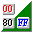

Windowsソフトウェア¶
汎用¶
Google Chrome¶
Tor¶
匿名ブラウジング
リンク
Lhaplus¶
解凍ソフトその1
大きな容量のファイルは解凍に失敗する場合があるので、その場合はExplzhなどの別の手段で解凍する必要がある
リンク
Explzh¶
解凍ソフトその2
個人利用は無料だが、商用利用は有料な点に注意
リンク
Everything¶
ファイルの高速検索
リンク
VLC¶
動画再生用
リンク
GIMP¶
画像編集用
リンク
Inkscape¶
ベクタファイル編集用
リンク
ImgBurn¶
ディスクの読み書き用
リンク
Audacity¶
音声編集用
リンク
AviUtl¶
高機能な動画編集ソフトだがクセがある
XMedia Recode¶
動画エンコーダー
リンク
OBS Studio¶
画面録画・配信・仮想カメラ
リンク
ScreenToGif¶
gifアニメ作成用
リンク
Volumer¶
マウスホイールで音量調整・ミュート
リンク
mp4tomp3¶
多くの動画・音声ファイルをmp3へ変換する
リンク
draw.io / diagrams.net¶
グラフ作成用
リンク
SofTalk¶
読み上げ用
リンク
@icon変換¶
icoファイル作成用
リンク
PSSTPSST¶
連番改名ソフト
※公式サイト消失
リンク
UWSC¶
マクロ用ソフト
※2017以降作者の消息不明、公式サイトも消失
リンク
NumLockLock¶
NumLockを封じる
リンク
コミュニケーションソフト¶
Zoom¶
Slack¶
Discord¶
開発ツール¶
Windows Terminal¶
Visual Studio Code¶
インストール時のメモ:
「Codeで開く」の項目2つにチェック
リンク
Git for Windows¶
Anaconda¶
Docker Desktop¶
Stirling¶

リンク
科学・論文¶
gnuplot¶
グラフ出力ソフト
リンク
briss¶
pdfトリミングソフト
※要: Javaランタイム
リンク
Gephi¶
グラフ分析ソフト
※日本語サイトは更新が止まっているため、英語公式サイトでインストールすること
※要: Javaランタイム
リンク(英語公式)